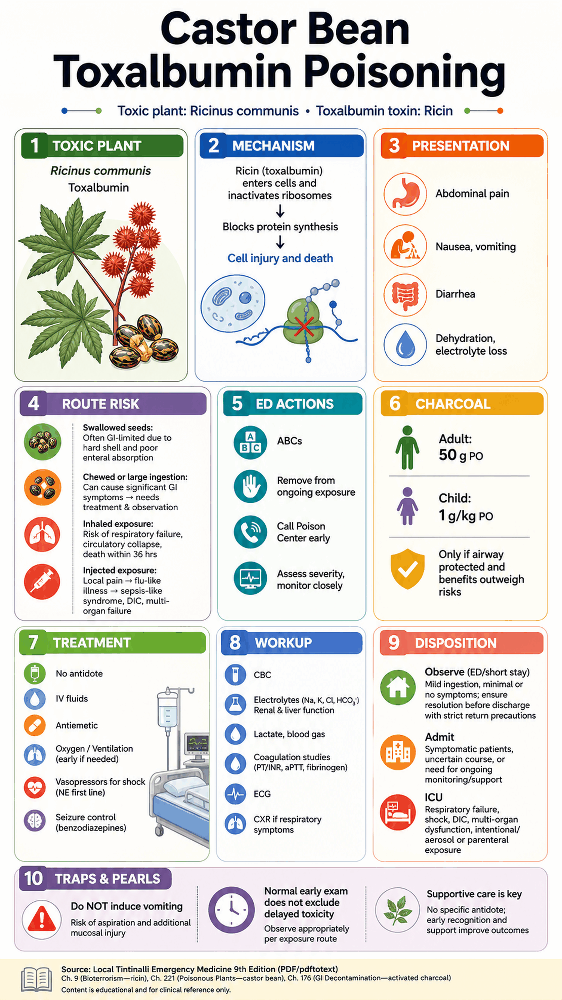
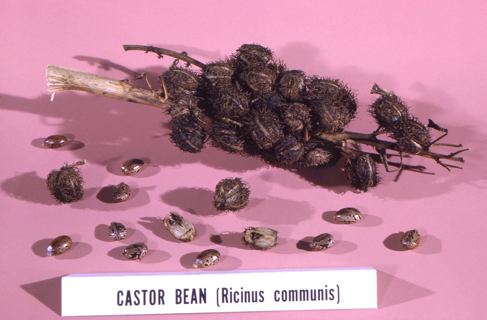

Real plant reference: CDC Public Health Image Library ID 19558, public domain. This reference image is included to support plant recognition only; it was not used as the medical source. CDC PHIL record.

